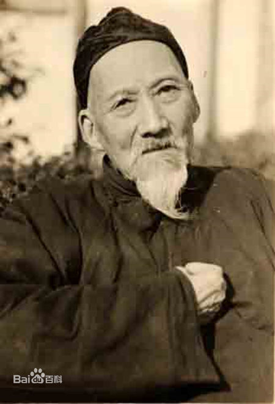
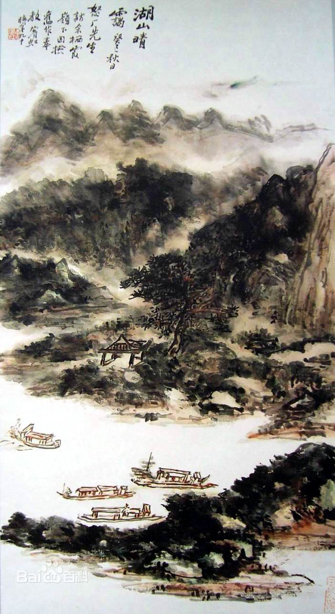

|

黄宾虹（1865年1月27日—1955年3月25日），初名懋质，后改名质，字朴存，号宾虹，别署予向。原籍安徽徽州歙县，生于浙江金华。中国近现代国画家，擅画山水，为山水画一代宗师。 黄宾虹自少即喜绘画、篆刻，六岁能临摹家藏沈廷瑞（樟崖）山水册，十三岁应童子试，名列前茅。十六岁在金华丽正书院肄业。与倪苏泉、蒋莲僧为知交画友。二十一岁，补凛贡生，任两淮盐运使署录事。1907年去沪，曾参与吴昌硕主持的海上题襟馆活动，协助邓实、黄节、柳亚子等编辑《政艺通报》、《国粹学报》、《国粹丛书》等，并先后与宣庐愚、郑午昌等组织宙合社、艺观学会、烂漫社、蜜蜂画社等，还在神州国光社、商务印书馆、有正书局等单位工作十三四年。1930年在上海任中国艺术专科学校校长。1937年举家迁至北平任教。1948年秋，应杭州国立西湖艺专之聘，南下任教。解放后任全国第二届政协委员，中国美术家协会理事。1955年九十寿辰时，获华东行政委员会颁发的奖状，被称为、中国人民优秀的画家；同年3月25日病逝于浙江杭州。 黄宾虹精研传统与关注写生齐头并进，早年受“新安画派”影响，以干笔淡墨、疏淡清逸为特色，为“白宾虹”；八十岁后以黑密厚重、黑里透亮为特色，为“黑宾虹”。他的技法，得力於李流芳、程邃，所作重视章法上的虚实、繁简、疏密的统一；用笔如作篆籀，洗练凝重，遒劲有力，在行笔谨严处，有纵横奇峭之趣。所谓“黑、密、厚、重”的画风，正是他显著的特色。 主要作品《黄山画家源流考》、《虹庐画谈》、《古画微》、《画学编》、《金石书画编》、《画法要旨》等，与邓实合辑《美术丛书》并有辑本《黄宾虹画语录》 艺术特色在中国近现代绘画史上，有“南黄北齐”之说，“北齐”指的是居住在北京的花鸟画匠齐白石，而“南黄”说的就是浙江的画家黄宾虹，二人被美术界并列在一起，足见黄宾虹的艺术功力和成就非同一般。 黄宾虹1865年生于浙江金华，卒于1955年。名质，字朴存，擅长山水、花卉并注重写生，但成名相对较晚。50岁以后，他的画风逐渐趋于写实，80岁以后，才真正形成了人们所熟悉的“黑、密、厚、重”的画风。黄宾虹晚年的山水画，所画山川层层深厚，气势磅礴，惊世骇俗，这一显著特点，也使中国的山水画上升到一种至高无上的境界。由于黄宾虹在美术史上的突出贡献，在他90岁寿辰的时候，被国家授予“中国人民优秀的画家”称号。 他绘画的技法，早年行力于李流芳、程邃，以及髡残、弘仁等，但也兼法元、明各家。所作重视章法上的虚实、繁简、疏密的统一；用笔如作篆籀，遒劲有力，在行笔谨严处，有纵横奇峭之趣。新安画派疏淡清逸的画风对黄宾虹的影响是终生的，六十岁以前是典型的“白宾虹”。 六十岁以后，曾两次自上海至安徽贵池，游览乌渡湖、秋浦、齐山。江上风景甚佳，他起了定居之念。贵池之游在黄宾虹画风上的影响，便是从新安画派的疏淡清逸，转开学习吴镇的黑密厚重的积墨风格。以此为转机，黄宾虹开始由“白宾虹”逐渐向“黑宾虹”过渡。1928年黄宾虹首游桂、粤，画了大量写生作品。 |